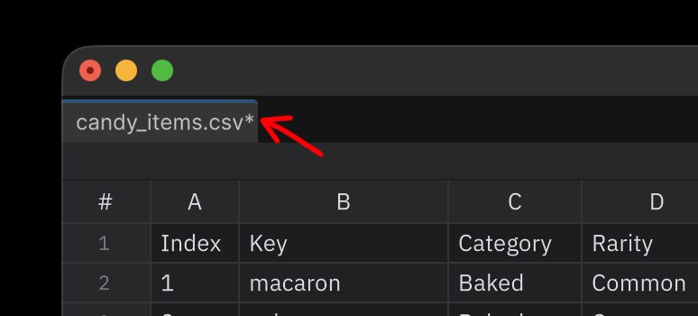
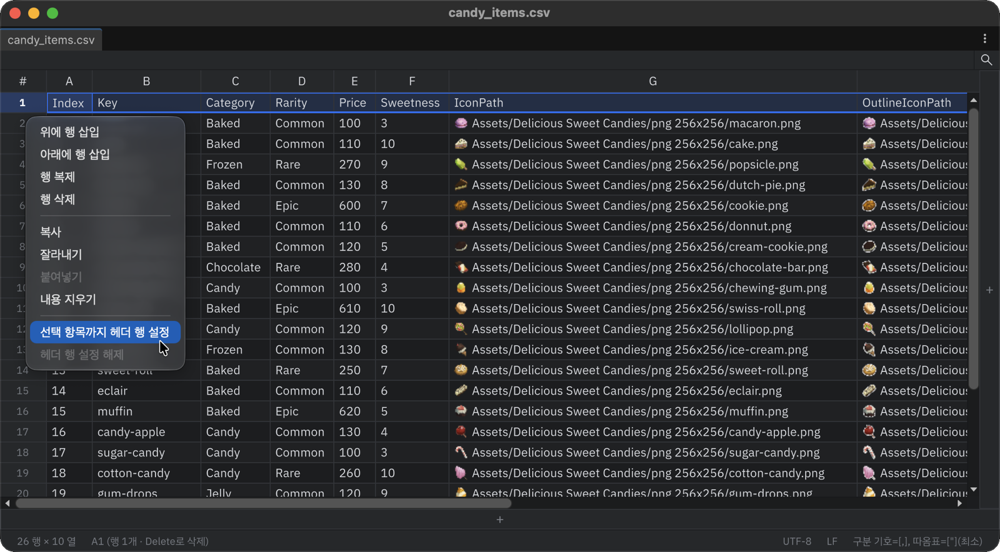

시작하기
표 열기
Project 창에서 .csv 또는 .tsv 에셋을 더블클릭합니다.
파일 없이 빈 창을 열려면 Window > NKStudio > Tabular Editor를 사용합니다.

Tabular Editor는 에셋마다 창 하나를 열며, 같은 파일을 다시 더블클릭하면 기존 창에 포커스를 줍니다.
큰 파일은 백그라운드에서 읽으므로 불러오는 동안에도 에디터가 멈추지 않습니다.
새 CSV 파일 만들기
Project 창에서 Create > Scripting > CSV File을 고르면 빈 표가 만들어지고 바로 이름을 행입력할 수 있습니다.
열 수(기본 5×5)와 인코딩·구분 기호 같은 형식은 환경 설정의 새 CSV 파일에서 정합니다.

편집하고 저장하기
- 셀을 클릭해 활성화합니다.
- 바로 타이핑해 값을 바꾸거나 F2 또는 더블클릭으로 기존 값을 편집합니다.
- Enter로 확정하고 아래로 이동하거나 Tab으로 확정하고 오른쪽으로 이동합니다. 셀 안에서 줄을 바꾸려면 Alt+Enter(macOS는 Option+Enter)를 누릅니다.
- Windows/Linux에서는 Ctrl+S, macOS에서는 Cmd+S로 저장합니다.
저장되지 않은 변경이 있으면 창 탭에 *가 붙고 상태 표시줄에 저장되지 않음이 나타납니다. 저장하지 않고 창을 닫으면 저장할지 묻습니다.

헤더 행 고정하기
표 왼쪽 끝의 행 번호를 우클릭하면 헤더 행을 정하는 메뉴가 나옵니다.
- 헤더로 고정할 마지막 행의 행 번호를 우클릭합니다. 맨 위 한 줄만 고정하려면 1을 우클릭합니다.
- 선택 항목까지 헤더 행 설정을 고릅니다. 1행부터 우클릭한 행까지가 헤더 행이 됩니다.

지정한 행들은 맨 위에 고정되어 굵게 표시되고, 세로로 스크롤해도 보입니다. 헤더 행도 선택·편집할 수 있으며 정렬에서만 빠집니다. 해제하려면 행 번호 우클릭 메뉴에서 헤더 행 설정 해제를 고릅니다. 헤더 행 수는 파일의 .meta에 기록되어 버전 관리로 팀원과 공유됩니다.